Your whole desktop,
finally yours.
A dock, desktop widgets, a wallpaper that follows the sun and the weather, a clipboard with snippets, a full screenshot studio, a focus timer, battery health, quick controls, quick notes and network tools, with a command bar to reach it all. For Windows 10 and 11. Switch on only what you want.
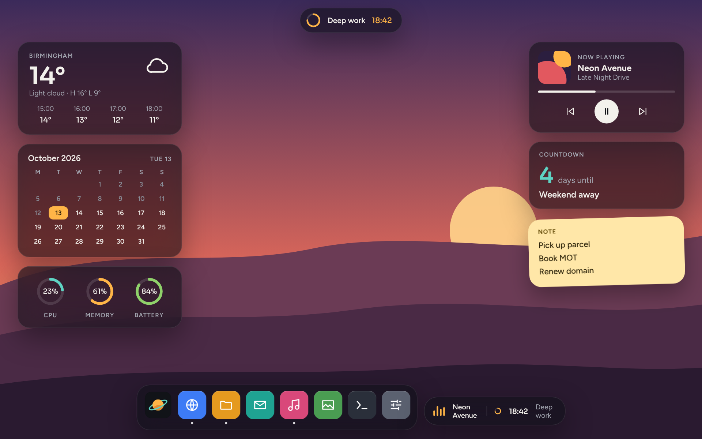
Why Arrakis
Ten little apps,
without the clutter.
Instead of installing a dock, a widget tool, a clipboard manager and a screenshot app separately, Arrakis puts them in one place that looks like it belongs together.
Only what you switch on
Every module has its own switch. Anything that's off doesn't run at all.
Stays on your PC
Clipboard history, notes and stats are stored locally. No account, no tracking.
Feels at home
Dark glass, soft shadows and one look across every module, so your desktop feels designed, not bolted together.
Tour
Everything inside.
Pick a module to see what it does.
The hub
One window with a card for every module. Flip the switch to turn it on, click the card for its settings.
- Lives quietly by the clock
- Dark or light, with six accent colours
- Updates itself quietly
- Back up everything to move to a new PC
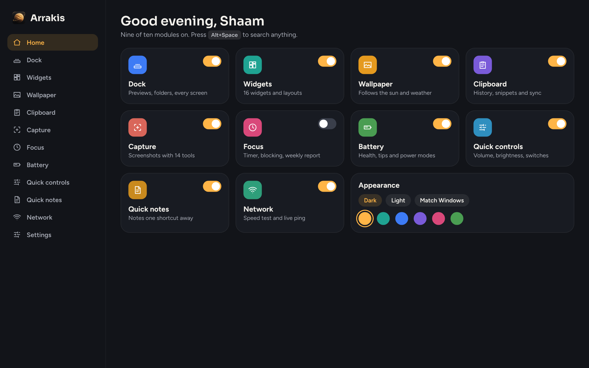
Dock
Pinned and open apps that glide smoothly as you move across them. Rest on one to see live previews of its windows.
- Five styles, six themes, bottom, left or right
- Magnify, Zoom, Lift, or no motion at all
- Window previews, counts and folder stacks
- A dock on every screen
- Replaces the taskbar on every screen, and always gives it back
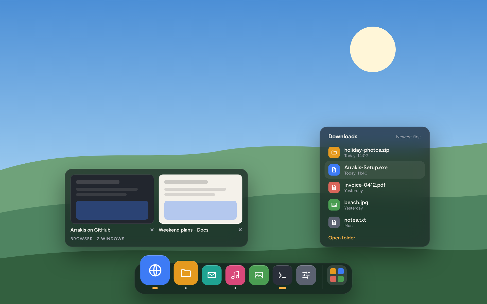
Widgets
16 widgets that sit behind your windows like part of the wallpaper, from clocks and weather to to-dos, stocks and headlines.
- Your calendar, with a heads-up before meetings
- World clocks, photo frame, quick launch
- Small, medium or large, snapped to a grid
- Save layouts like Work and Gaming
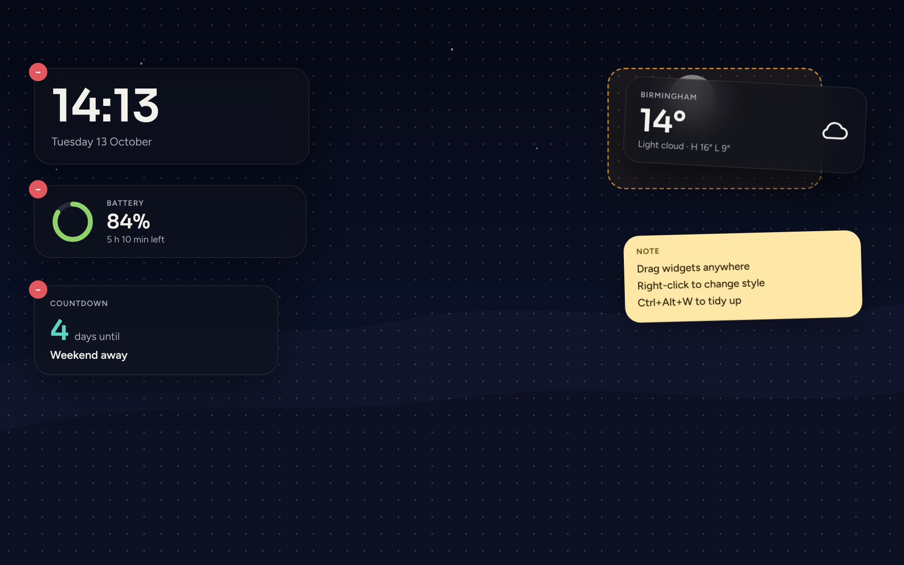
Wallpaper
Dawn, day, sunset and night scenes drawn at your screen's exact size, changing with real sunrise and sunset where you live.
- Rain, snow, fog and storms when it's happening outside
- A sun that moves across the sky
- Thousands of wallpapers from Wallhaven, set in one click
- Or your own photos, or Bing's photo of the day
- Every screen gets its own
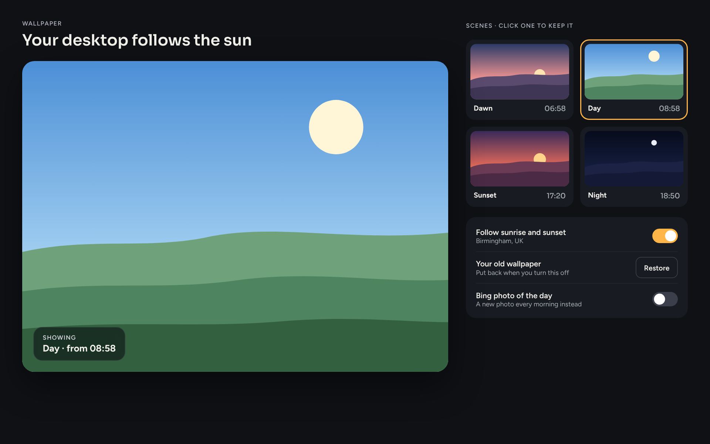
Clipboard
Everything you copy, searchable. Links, colours and images are recognised automatically.
- Snippets: type
;addranywhere for your address - Paste as UPPERCASE, one line, sorted and more
- Collections, pins and a paste stack
- Card numbers and passwords hidden, then deleted
- Encrypted sync between your PCs
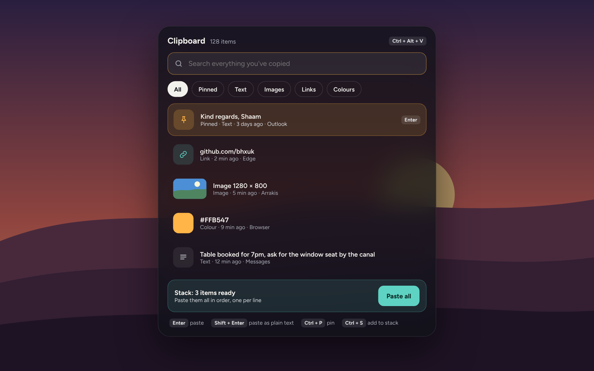
Capture
A full screenshot studio: grab an area, a window or every screen, then mark it up with 14 tools.
- Area, window, full screen, all screens, last area or delayed
- Magnifier with exact pixel and colour
- Callouts, steps, arrows, blur, crop and more
- Copy text out of any screenshot
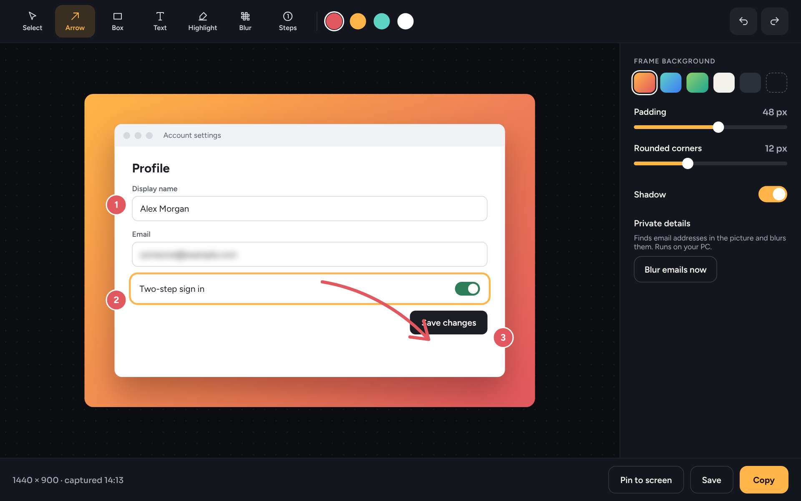
Focus
A small pill counts down at the top of your screen while everything else goes quiet.
- Notifications silenced, dock hidden, widgets dimmed
- Distracting apps nudged or minimised
- Starts from your calendar, opens your playlist
- A weekly report of where your time went
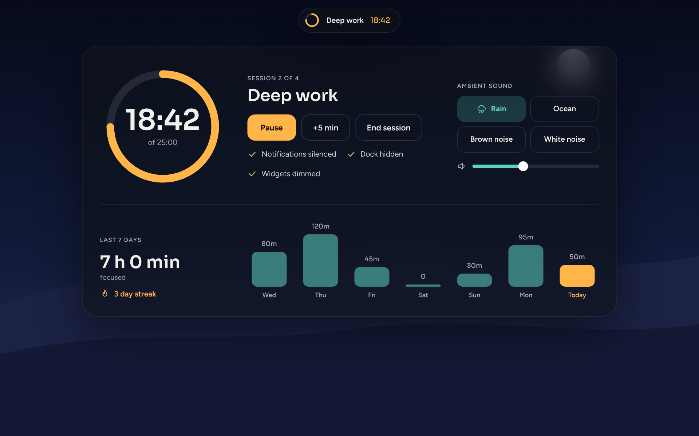
Battery
Windows hides this in a text report. Arrakis puts it on one clear page.
- Health, cycles and a 7-day chart
- Tips based on how you charge
- Low-battery alerts that name the culprits
- Power modes in one click, and a printable report
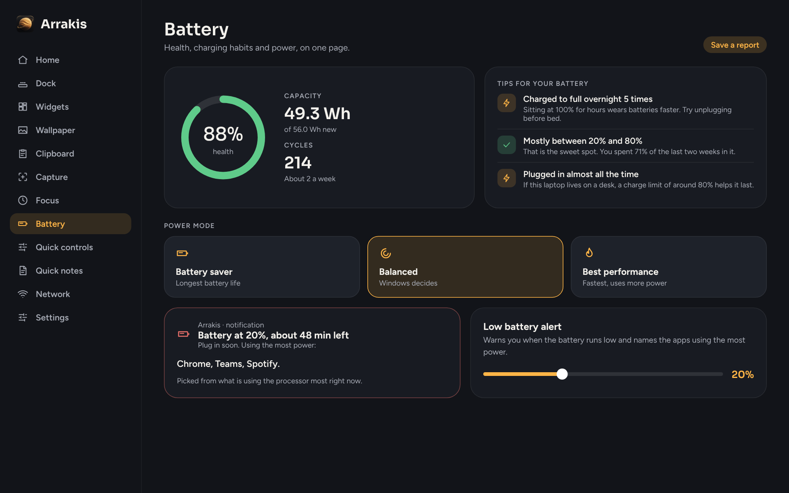
Quick controls
The switches and sliders you'd normally dig through Settings for, in one panel.
- Wi-Fi, Bluetooth, dark mode, Night light, Do not disturb, mic
- Brightness for laptop screens and external monitors
- Volume for each app, and switch speakers or headphones
- Power modes in one click
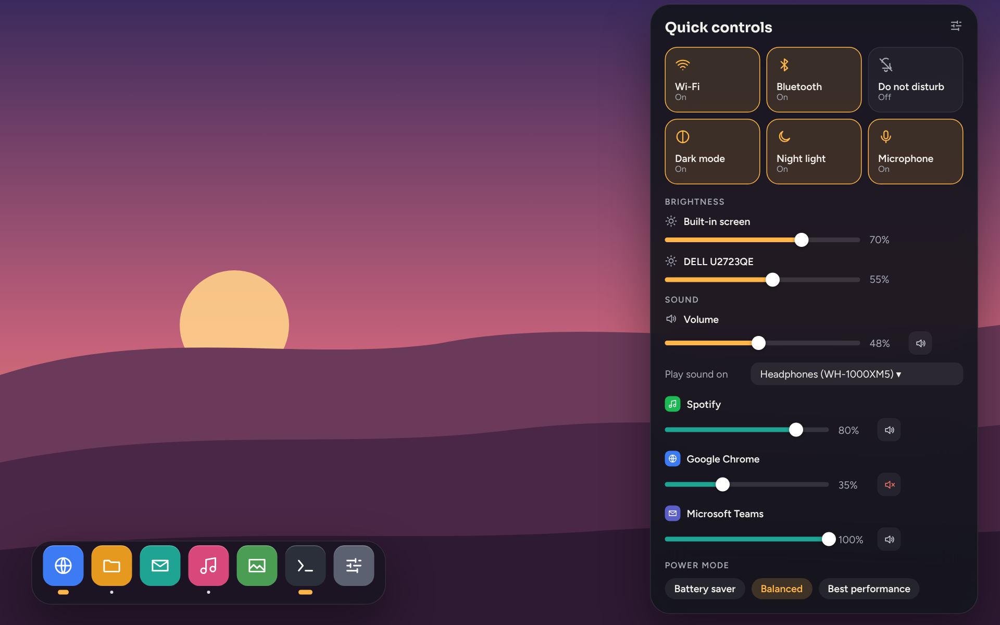
Quick notes
A fresh note from anywhere, saved as you type.
- Search every note, here or in the command bar
- Saved as text files in a folder you choose
- Pin any note to the desktop as a sticky
- Six colours
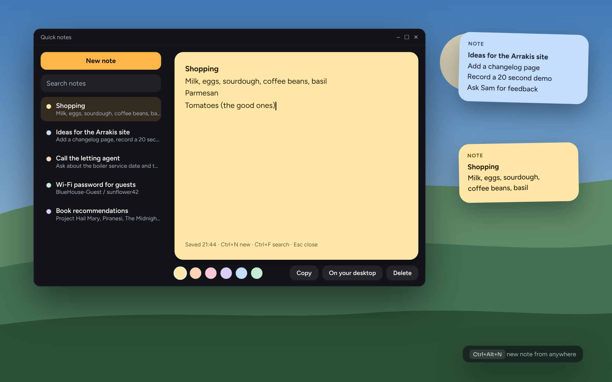
Network
Is it your Wi-Fi or your broadband? Find out in a click.
- Speed test with your recent results
- Live ping graph and a ping widget
- Tips for slow Wi-Fi
- Every device on your network
- Alerts when the internet drops
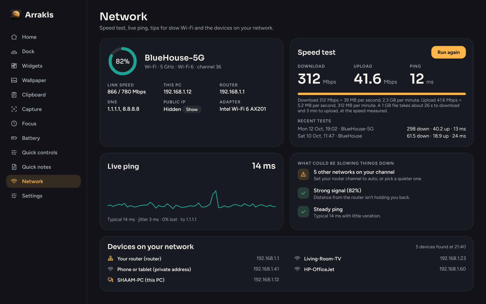
Screens are renders of the app's layouts. Your apps, weather and numbers will be your own.
New in 1.4
A dock that feels right.
Rebuilt to glide smoothly, with styles, themes and positions to make it yours. Plus Wallhaven wallpapers, notes as files, and a taskbar fix for multiple screens.
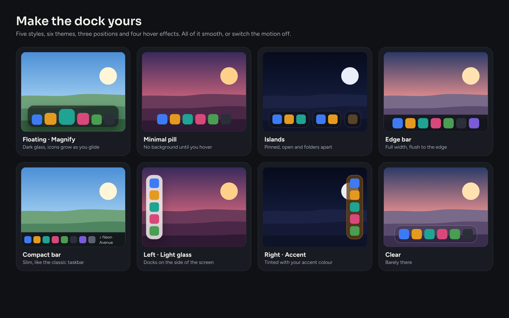
Smooth
Icons ease in and out every frame and grow on your graphics card. Or switch motion off entirely.
Your style
Floating, Minimal pill, Islands, Edge bar or Compact bar. Dark, light, solid, clear or accent. Bottom, left or right.
Every screen
Hide the taskbar on every screen, using Windows' own auto-hide, so maximised windows use the full screen. Put it back in one click.
Wallhaven, built in
Scroll through thousands of wallpapers right on the Wallpaper page, and set one on every screen, or just one, in a click.
- Top, Hot, Latest, Random or search
- Only ones that fit your screen
- A popular new one each day, if you like
- Safe for work, no account needed
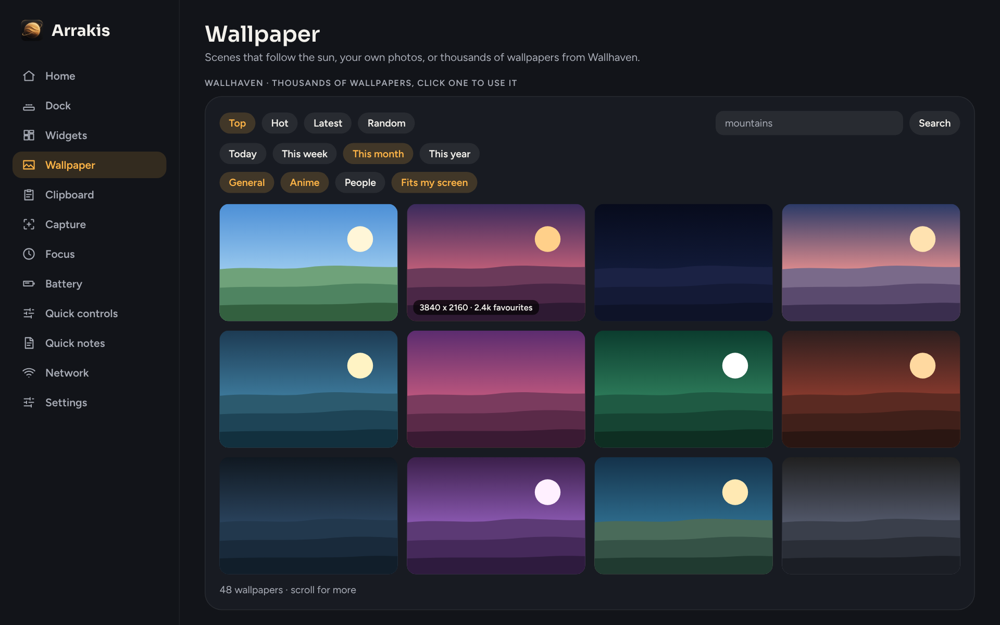
Notes as files
Every Quick note is saved as a .txt file in a folder you choose, like OneDrive. One click opens it.
Real speeds
Speed test results in MB per second and GB per minute, and how long a 1 GB file takes.
Updates itself
Already on 1.3? Arrakis installs 1.4 for you the next time it starts.
Added in 1.3
Three new modules.
Quick controls, Quick notes and Network. Each one replaces a trip into Windows Settings or another app.
Quick controls
Press Ctrl+Alt+Q for one panel with everything you'd normally hunt for.
- Wi-Fi, Bluetooth, dark mode, Night light, Do not disturb and the mic
- Brightness for every screen, external monitors included
- A volume slider for each app
- Switch between speakers and headphones
Quick notes
Press Ctrl+Alt+N in any app and start typing. It's saved before you've finished the sentence.
- Search every note, or find them from the command bar
- Pin a note to the desktop as a sticky
- Six colours, copy in one click
Network
Is it the Wi-Fi, the broadband or something else? The Network page tells you, in plain English.
- Speed test for download, upload, ping and jitter
- Live ping graph, plus a ping widget
- Tips: signal, band, crowded channels, cables
- See every device on your network
- A heads-up when the internet drops
Added in 1.2
Something new in every module.
Plus a command bar that reaches all of it, a light theme, and updates that install themselves.
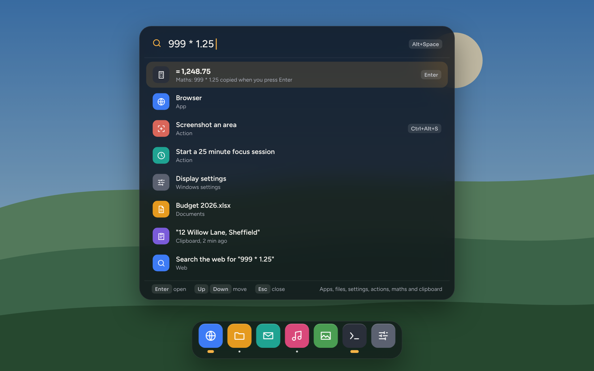
One box for everything
Press Alt+Space anywhere. Find apps, files and Windows settings, pull up something you copied, or type a sum and press Enter to copy the answer.
- Start a 25, 50 or 90 minute focus session
- Open quick controls, a new note or a speed test
- Switch power modes or widget layouts
- Take a screenshot or open the clipboard
- Search the web for anything else
Dock
Live window previews, window counts, folder stacks, drag to pin, and a dock on every screen.
Widgets
Agenda, to-do, quick launch, world clocks, photo frame, stocks and headlines. Calendar sync with meeting alerts, sizes, snapping and layouts.
Wallpaper
Weather that matches outside, a sun that moves through the day, your own photos, and a picture for each screen.
Clipboard
Snippets with shortcodes, Paste as, collections, card numbers and passwords auto-deleted, and encrypted sync between PCs.
Focus
Block distracting apps, note what you're working on, open a playlist, start from your calendar, and see a weekly report.
Battery
Charging tips, low-battery alerts that name the apps draining it, power modes and a printable health report.
Light or dark, your colour
Choose Dark, Light or Match Windows, and one of six accent colours for buttons, switches and highlights.
- Updates download and install quietly
- Never in the middle of a focus session
- Export everything to one file for a new PC
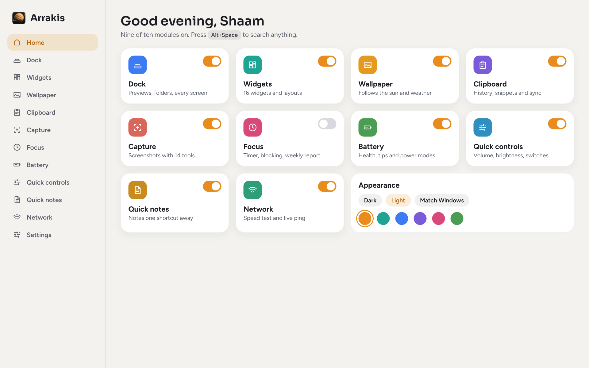
Capture
A screenshot studio,
built right in.
Capture anything on screen, mark it up beautifully and share it in seconds. No extra app to install.
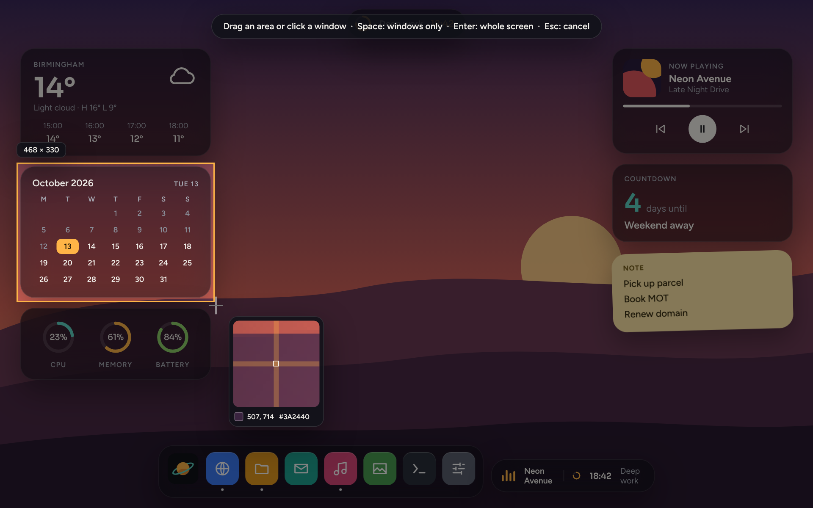
Pick exactly what you want
The screen freezes so nothing moves. Drag an area, or hover and click a window. A magnifier shows the exact pixel, its position and its colour.
- Space switches between area and window
- C copies the colour under the mouse
- Arrow keys nudge one pixel at a time
- Optional mouse pointer in the shot
14 tools
Select, box, ellipse, line, arrow, pen, text, callout, numbered steps, highlight, pixelate, blur, crop and a colour picker. Each one has a single-key shortcut.
Change your mind
Move, nudge, recolour and delete anything you've drawn. Full undo and redo, and zoom with Ctrl and the wheel.
Effects
Rotate, flip, resize, greyscale, invert, border, drop shadow and torn edges. Then add a frame with padding and rounded corners.
Private by default
Email addresses are blurred automatically, and Copy text reads the words in any screenshot. Both run on your PC.
Every way out
Copy, quick-save with your own file names, Save as PNG, JPG, BMP, GIF or TIFF, print, open in Paint, or pin it on top.
Or skip the editor
Set screenshots to go straight to the clipboard or a folder. Or use the Print Screen key if you prefer.
The details
Small things, done properly.
Keyboard first
Everything you use often is one shortcut away, from anywhere.
Taskbar safety net
Hide the taskbar if you like. It always comes back when Arrakis closes.
Four scenes, one sun
Sunrise and sunset are worked out for your city every day, and the sky matches the weather outside.
Works with your music
Spotify, browsers, Media Player and anything else in Windows' media controls shows up in the dock and the widget.
No extra downloads
Everything it needs is built in, even the focus sounds.
Private by design
No account and no tracking. Only things you switch on, like weather or your calendar, go online.
Open source
Every line is on GitHub under the MIT licence.
Install
Running in under a minute.
Windows 10 (version 2004 or later) or Windows 11, 64-bit. Nothing else to install.
- DownloadGet Arrakis-Setup.exe from the button, or from the releases page on GitHub.
- Run itDouble-click the file. It installs just for you, so there's no admin password.
- Switch things onArrakis opens on the hub. Turn on the modules you want and you're done.
Questions
Will it mess up my taskbar?
Only if you ask it to hide it. It uses Windows' own auto-hide setting and always puts it back when Arrakis closes, and Arrakis > Dock > Put the taskbar back does it in one click. If anything goes wrong, Start > Arrakis > Restore Windows taskbar brings it straight back.
Does it slow my PC down?
Modules you switch off don't run at all, and the hub shows exactly how much memory Arrakis is using.
What does it send over the internet?
Only what you switch on: the weather (from Open-Meteo, if you set a city), Bing's photo of the day, your calendar link, stock prices and news headlines if you add those widgets, a speed test when you run one, Wallhaven wallpapers when you browse them, and an update check on GitHub, which you can switch off. Nothing about you is sent anywhere.
How does clipboard sync work?
Pick a folder both PCs can see, like OneDrive or Dropbox, and the same password on each. Your history is encrypted on your PC before it's written there, and card numbers and passwords are never synced.
How do updates work?
Arrakis checks GitHub when it starts. If there's a new version it installs it quietly and reopens, unless you're in a focus session. You can turn this off in Settings.
How do I uninstall it?
Settings > Apps, like any other app. Your settings stay in %AppData%\Arrakis in case you come back; delete that folder to remove them too.
Make Windows feel like yours.
Free, open source and about a minute to set up.